<title>Menus, Shop and HUD Review</title>
<meta name="claude:viewport-fit-sides" content="cover">
<link rel="stylesheet" href="https://fonts.googleapis.com/css2?family=Inter:wght@400;500;600&family=Space+Grotesk:wght@500;600&display=swap">
<style>
/* Layout: one column of pictures, each with its numbers beside it as a caption strip. */
:root { --bg:#f3f4f6; --fg:#16191d; --muted:#5b6370; --panel:#ffffff; --line:#d9dde3; --accent:#1f8fa8;
  --display:"Space Grotesk",Inter,system-ui,sans-serif; --body:Inter,system-ui,sans-serif; }
@media (prefers-color-scheme: dark) { :root:not([data-theme="light"]) { --bg:#0f1215; --fg:#e8ebee; --muted:#98a1ad; --panel:#171b20; --line:#2a3038; --accent:#5cc4dc; color-scheme:dark } }
:root[data-theme="dark"] { --bg:#0f1215; --fg:#e8ebee; --muted:#98a1ad; --panel:#171b20; --line:#2a3038; --accent:#5cc4dc; color-scheme:dark }
body { background:var(--bg); color:var(--fg); font:15px/1.55 var(--body); padding-left:max(16px,env(safe-area-inset-left,0px)); padding-right:max(16px,env(safe-area-inset-right,0px)); padding-block:32px 48px }
main { max-width:1100px; margin:0 auto; display:grid; gap:28px }
h1 { font:600 2rem/1.15 var(--display); margin:0; text-wrap:balance }
h2 { font:600 1.15rem/1.3 var(--display); margin:0 }
p { margin:0; max-width:68ch }
.lede { color:var(--muted) }
figure { margin:0; background:var(--panel); border:1px solid var(--line); border-radius:10px; overflow:hidden }
figure img { display:block; width:100% }
figcaption { padding:12px 16px; display:flex; flex-wrap:wrap; gap:6px 18px; font-size:.9rem; color:var(--muted) }
figcaption b { color:var(--fg); font-weight:600 }
.k { font-variant-numeric:tabular-nums; color:var(--accent); font-weight:600 }
.pair { display:grid; grid-template-columns:1fr 1fr; gap:16px }
@media (max-width:700px) { .pair { grid-template-columns:1fr } }
ul { margin:0; padding-left:1.2em; display:grid; gap:4px }
kbd { font:600 .85em var(--body); border:1px solid var(--line); border-radius:4px; padding:0 5px; background:var(--panel) }
.find { display:grid; gap:10px; counter-reset:none }
.find li { padding-left:2px }
.tag { display:inline-block; font:600 .72rem/1 var(--body); letter-spacing:.06em; text-transform:uppercase; color:var(--accent); margin-right:6px }
.note { color:var(--muted); font-size:.9rem }
table { border-collapse:collapse; font-size:.9rem; width:100% }
td, th { text-align:left; padding:6px 10px; border-bottom:1px solid var(--line); font-variant-numeric:tabular-nums }
th { color:var(--muted); font-weight:600 }
.wrap { overflow-x:auto }
</style>
<main>
  <header style="display:grid;gap:8px">
    <h1>Menus, shop and HUD review</h1>
    <p class="lede">Owner, 11-15 02:56Z: "The text seems too small. I feel like we're not always making the best use of space." Every screen at 1920×1080 and 100% UI, before and after the fixes in this PR, from the cloud's software GPU. Pixel sizes are on a 1080-line screen.</p>
  </header>

  <section style="display:grid;gap:12px">
    <h2>The big picture</h2>
    <ul class="find">
      <li><span class="tag">Type</span>The UI unit is one pixel at 1080 lines, and most words were drawn at 9 to 12.5 units. The bottom bar then drew at 92% of that, so its key letters and costs were <span class="k">8.7 px</span>. Ctrl + makes boxes and words bigger together, so it never fixed the real problem: small words in big boxes. This PR changes the proportion. Body text is now 13 to 15 px and nothing on the bar is under 11.5 px.</li>
      <li><span class="tag">Space</span>The bar's middle panel was about 1,100 px of empty glass holding one 66 px squad tile. Meanwhile the command card squeezed 12 unlabelled icons into 290 px. The card now spends some of that empty width on names. The shop had the opposite problem: lots of spare width but not enough height, and the page shrinks itself to fit. Tall portrait cards were making every word on the page smaller, so the bullet cards are now landscape.</li>
      <li><span class="tag">Hierarchy</span>Section labels ("Guns", "For sale", "Upgrades") and the hint lines were drawn in the faintest grey, the same colour as disabled things. They are now the muted grey. Option notes were cut off at half the row and are now readable to the value column. The key list is 2.5× wider, so its lines no longer end in "…".</li>
      <li><span class="tag">Overlap</span>The corner minimap was drawn on top of the shop's armory and the menus. It now hides while a full-screen menu is up.</li>
    </ul>
  </section>

  <section style="display:grid;gap:12px">
    <h2>What changed, in pixels</h2>
    <div class="wrap"><table>
      <tr><th>Where</th><th>Before</th><th>After</th></tr>
      <tr><td>Command buttons</td><td>39×39, icon only, key 9 px, cost 8.7 px</td><td>116×42, name 13 px beside the icon, key 11.5, cost 12</td></tr>
      <tr><td>Bottom bar height</td><td>104 px (9.6%)</td><td>113 px (10.5%), still one row at every zoom</td></tr>
      <tr><td>Squad tiles</td><td>66×50, count only</td><td>up to 136×54, count and state ("holding", "working")</td></tr>
      <tr><td>Gun-card strip</td><td>31 px slots, name 12 px, state 10 px</td><td>46 px slots, name 15, state 13</td></tr>
      <tr><td>Bar headers, tooltips, alerts</td><td>11.5 to 14 px</td><td>13.5 to 16 px</td></tr>
      <tr><td>Menu buttons</td><td>17 px, subtitle 12.5</td><td>18 px, subtitle 14, 500 px wide (was 420)</td></tr>
      <tr><td>Options</td><td>notes 12 px, cut at half the row</td><td>13.5 px, 1.4× wider panel</td></tr>
      <tr><td>Shop tiles</td><td>60 units, name 9.5 (shrinking to 7.5)</td><td>78 units, name 12.5 or two lines</td></tr>
      <tr><td>Shop bullet cards</td><td>78×98 portrait, name 11, price 10.5</td><td>184×64 landscape, name 13.5, price 13.5</td></tr>
      <tr><td>Shop gun cards and detail</td><td>numbers 10, detail 12</td><td>numbers 12.5, detail 14</td></tr>
    </table></div>
    <p class="note">The shop draws at its own scale, which is about 1.2 at 1080 lines, so its words are 1.2× these units on screen. Frame cost (CPU, model and HUD, run planet 1 at 4 s, squad mode): 0.130 ms before, 0.155 ms after; the labels are about 24 more text runs.</p>
  </section>

  <section style="display:grid;gap:12px">
    <h2>In play: the bottom bar</h2>
    <figure>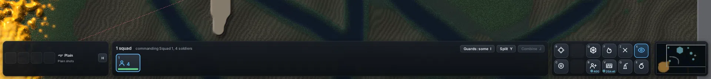<figcaption><b>Before</b> squad mode, run planet 1, 2-9 s · icon-only command card · one squad tile in an empty panel</figcaption></figure>
    <figure>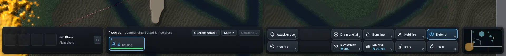<figcaption><b>After</b> same seconds · every button named · the tile says what the squad is doing</figcaption></figure>
    <div class="pair"><figure>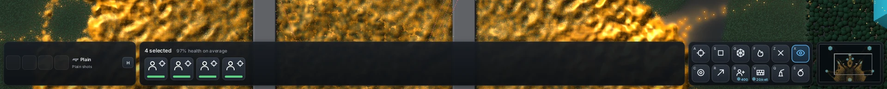<figcaption><b>Before</b> RTS control, 4 selected</figcaption></figure><figure>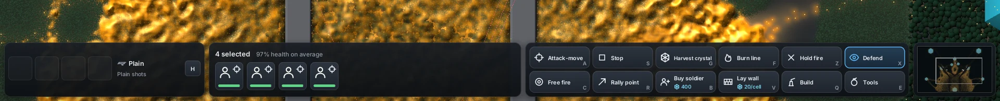<figcaption><b>After</b> the same; Harvest crystal, Rally point and the rest are named</figcaption></figure></div>
    <div class="pair"><figure>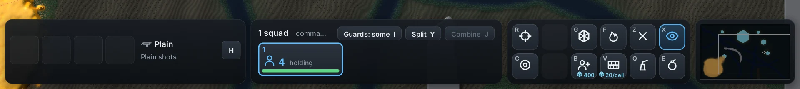<figcaption><b>After, 150%</b> the row is too short for names, so the card goes back to square buttons with bigger keys and costs</figcaption></figure><figure>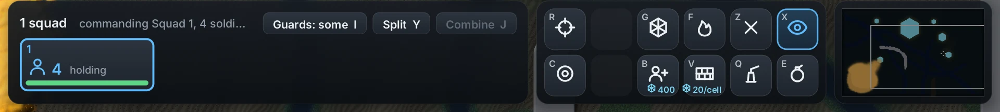<figcaption><b>After, 200%</b> square buttons; the gun strip moves above the bar as before</figcaption></figure></div>
    <div class="pair"><figure>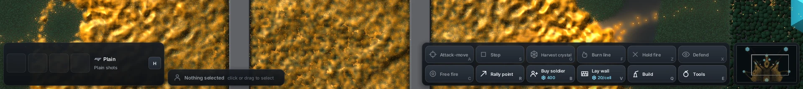<figcaption><b>After, nothing selected</b> collapsed strip, 14 px</figcaption></figure><figure>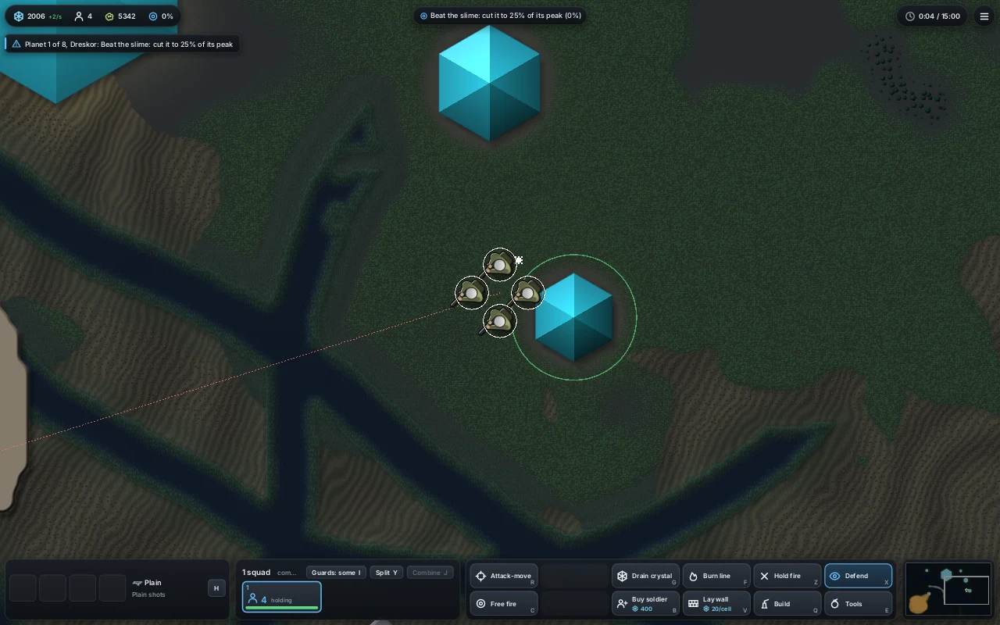<figcaption><b>After, 1280×800</b> names still fit; the whole UI is at 0.74 here (see Next)</figcaption></figure></div>
    <div class="pair"><figure>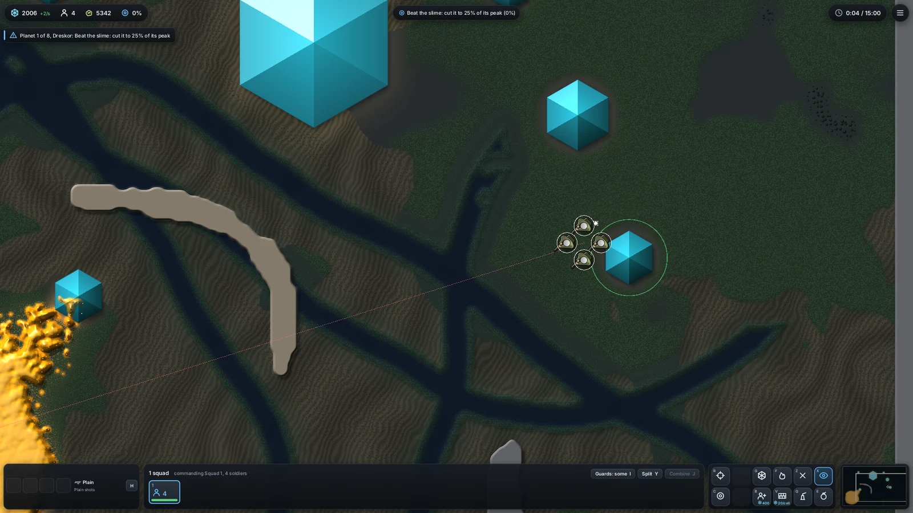<figcaption><b>Before</b> whole frame</figcaption></figure><figure>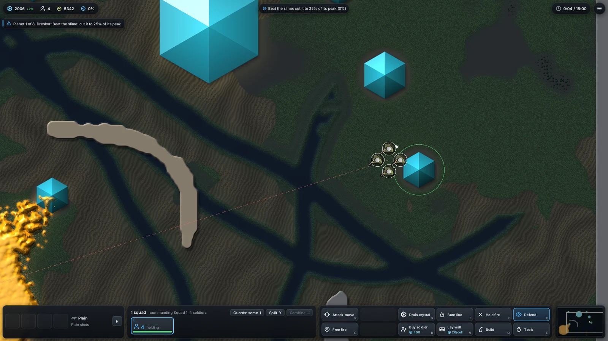<figcaption><b>After</b> whole frame</figcaption></figure></div>
  </section>

  <section style="display:grid;gap:12px">
    <h2>The run's shop</h2>
    <figure>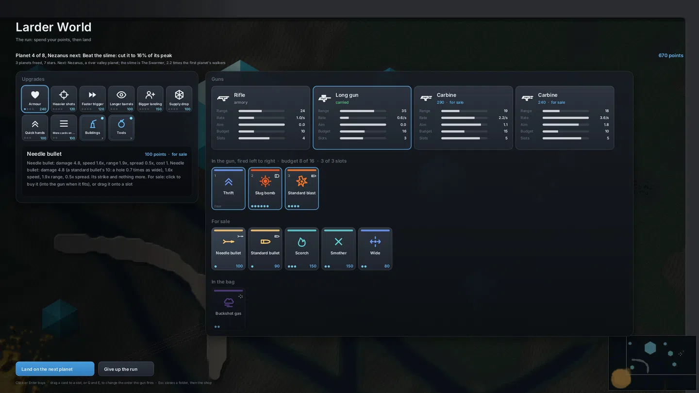<figcaption><b>Before</b> a run three planets in; Needle bullet dragged into slot 1</figcaption></figure>
    <figure>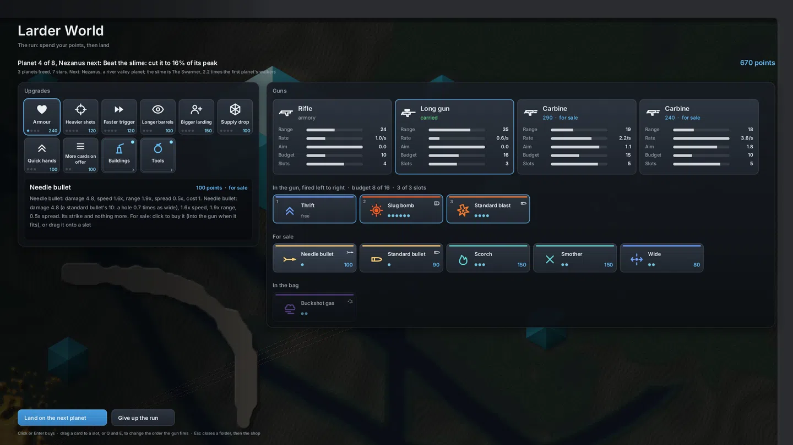<figcaption><b>After</b> the same drag · landscape cards · bigger tiles and numbers · no minimap on the armory</figcaption></figure>
    <div class="pair"><figure>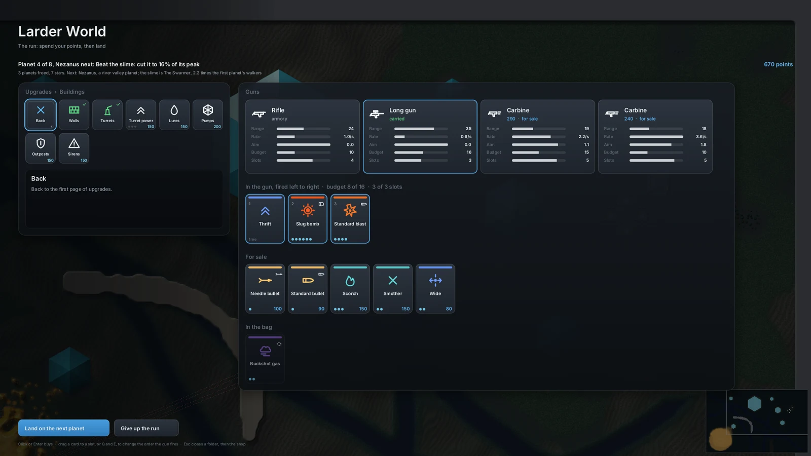<figcaption><b>Before</b> Buildings folder open</figcaption></figure><figure>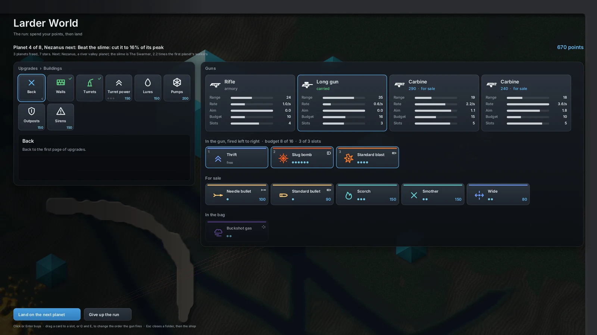<figcaption><b>After</b> Buildings folder open</figcaption></figure></div>
    <figure>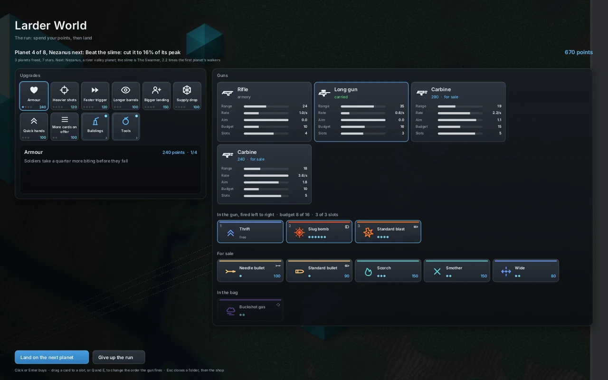<figcaption><b>After, 1280×800</b> the four guns wrap to two rows; everything still fits above the buttons</figcaption></figure>
  </section>

  <section style="display:grid;gap:12px">
    <h2>Start menu pages</h2>
    <div class="pair"><figure>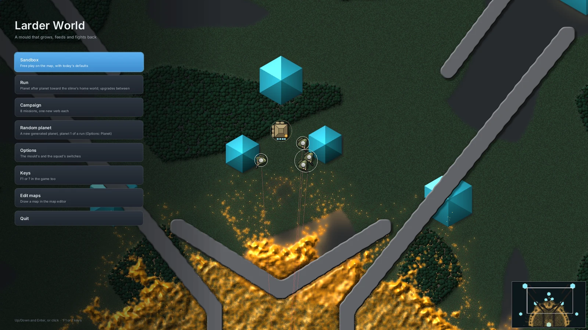<figcaption><b>Before</b> main page</figcaption></figure><figure>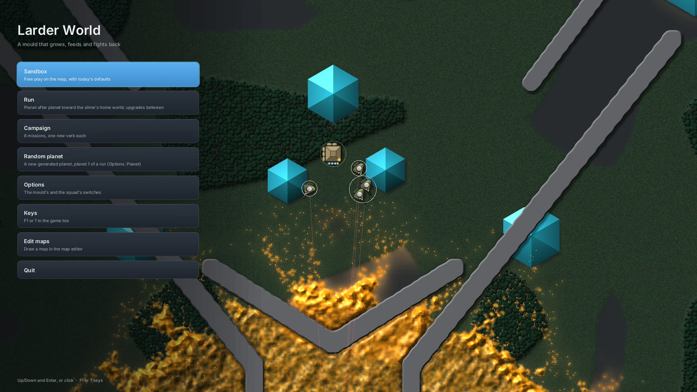<figcaption><b>After</b> bigger buttons and subtitles; hint line readable</figcaption></figure></div>
    <div class="pair"><figure>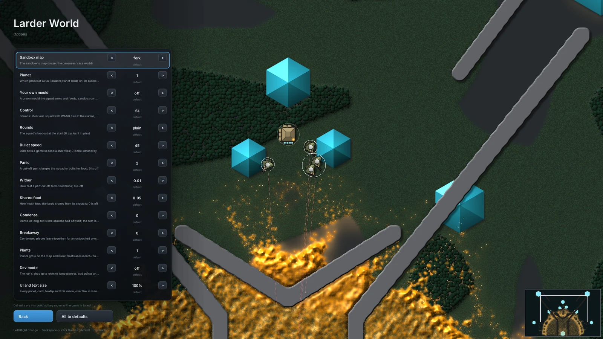<figcaption><b>Before</b> notes cut off at half the row</figcaption></figure><figure>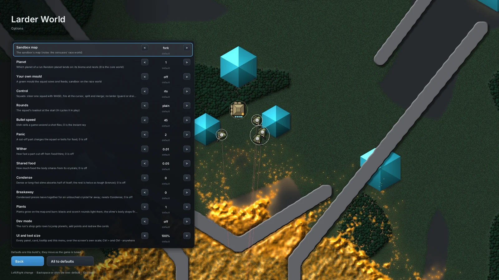<figcaption><b>After</b> notes run to the value column</figcaption></figure></div>
    <div class="pair"><figure>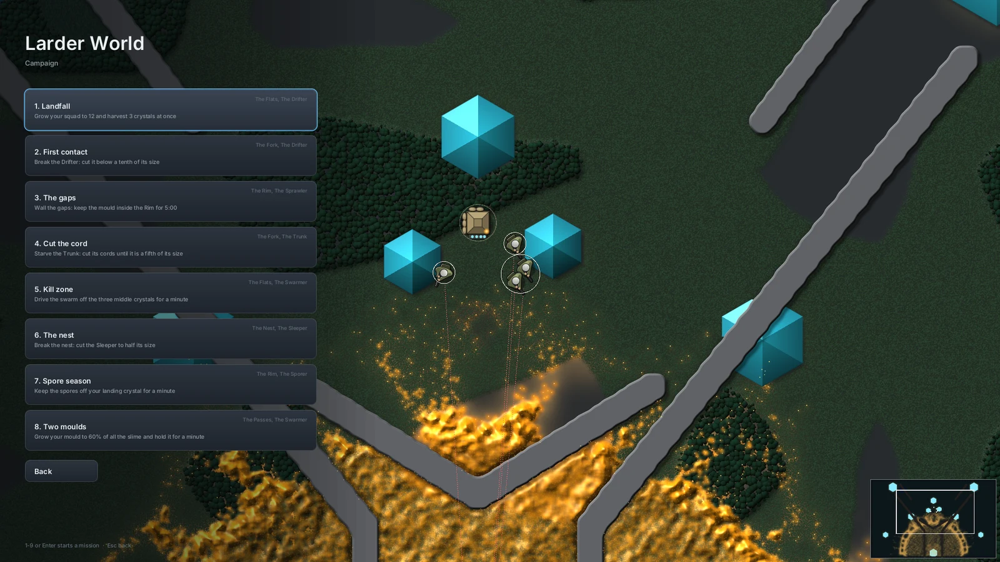<figcaption><b>Before</b> map and mould names in the faintest grey</figcaption></figure><figure>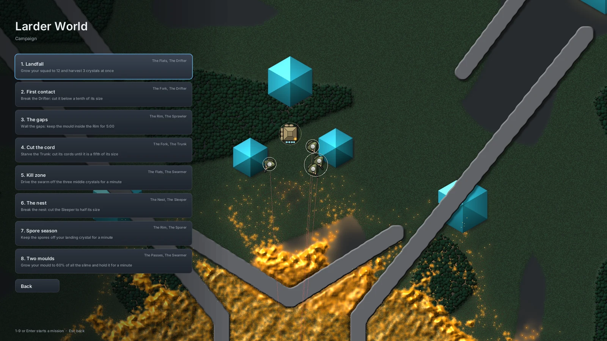<figcaption><b>After</b> the same names, readable</figcaption></figure></div>
    <div class="pair"><figure>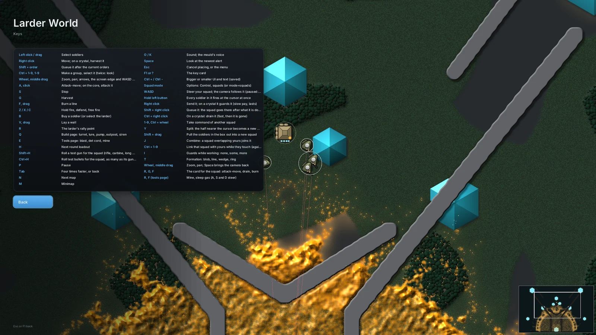<figcaption><b>Before</b> two narrow columns, most lines cut</figcaption></figure><figure>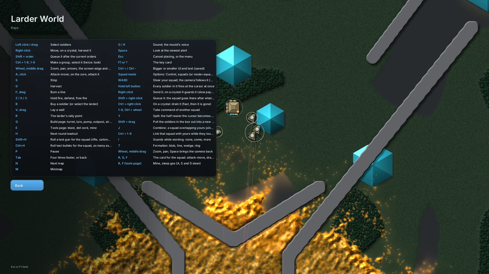<figcaption><b>After</b> wider columns at 15 px</figcaption></figure></div>
  </section>

  <section style="display:grid;gap:12px">
    <h2>Next, not in this PR</h2>
    <ul>
      <li><b>Small windows.</b> Below 1080 lines the whole UI scales down, with a floor of 0.7. At 1280×800 it is 0.74, so 13 px words become about 10 px. A default above 100% on small screens, or a higher floor, would fix that. It is a one-line change to <code>UiSize::px</code>, but it changes every screen, so it needs the owner's pick.</li>
      <li><b>The squad panel still has room.</b> In squad mode the middle panel could show the active squad's order queue and gun at a glance, instead of only in tooltips.</li>
      <li><b>Card text length.</b> The gun thread is shortening the gun and bullet card wording (owner 02:57Z). This PR only changes sizes, not that wording.</li>
      <li><b>Map editor.</b> Its panel uses fixed pixels (<code>UiSize::fixed</code>) and was not changed here.</li>
    </ul>
  </section>
</main>
